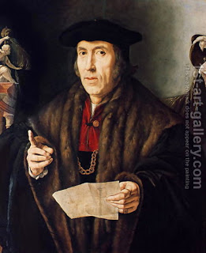

Bava Metzia 49 - That One Should Abide by his Word
If the buyer gave the seller the money but did not take the produce from him, either party can legally renege, but the Sages said, "The One Who exacted retribution from the people of the Generation of the Flood and from the Generation of Dispersion - He will ultimately exact retribution from someone who does not abide by his word!"
Abaye says that the court informs him about the retribution, and Rava says that the court actually pronounces the curse.
When one makes a partial payment on movable property, Rav says that he acquires only an amount equal to its value, but Rabbi Yochanan says that he acquires the entire purchase.